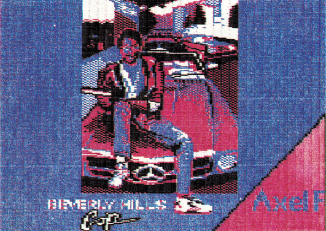
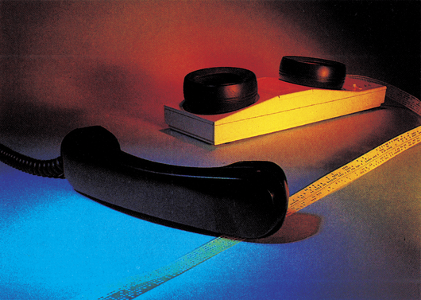
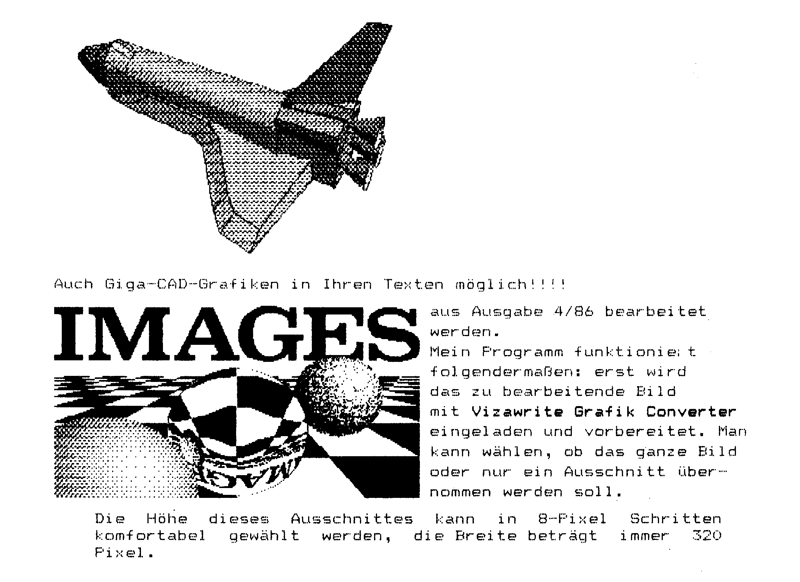

Vorschau
Mit bloßer Faust
Die Spieletests in der nächsten Ausgabe sind ein Rundumschlag im wahrsten Sinne des Wortes. Wir haben uns an neue Kampfsport-Spiele gewagt, um die besten für Sie herauszufinden.
Für unsere friedliebenderen Leser testen wir die Möglichkeit, das eigene Leben mit »Alter Ego« nachzuspielen. Hart an der Grenze zwischen Spiel und Selbsterkenntnis steht dieses von Psychologen entwickelte Programm.
Alles für Einsteiger
Einsteiger in Sachen Computer kämpfen oft mit Problemen, über die Profis nur schmunzeln können. Das 64'er-Magazin hilft ab der nächsten Ausgabe allen Einsteigern die ersten Hürden zu überwinden. Sei es nun, die ersten Programmierschritte zu gehen, die »chinesischen« Fachbegriffe zu klären oder den Überblick an Hard- und Software zu gewinnen. Dies alles wird helfen, die Neuerwerbung schon bald sinnvoll einzusetzen.
C 64 — die Musikmaschine
Wer das wirklich fantasti" sche Musikstück »Shades« aus den Ausgaben 6/86 und 7/86 gehört hat, wird gespannt auf den »Sound-Monitor« warten. Mit diesem Programm läßt sich nämlich solche Musik ganz einfach selbst machen. Angefangen von der Möglichkeit, die Musik direkt über die Tastatur einzuspielen bis hin zur sehr hohen Klangqualität holt dieses Listing des Monats wirklich alles aus dem Sound-Chip des C 64. Auch unsere Anwendung des Monats in der nächsten Ausgabe hat mit Sound und Musik zu tun: Wir stellen Ihnen eine kleine Platine vor, mit deren Hilfe sich Sprache und Musik mit dem C 64 aufnehmen, bearbeiten, verzerren und natürlich wiedergeben läßt.

Datenfernübertragung ist nicht nur ein Thema für Profis. Eine umfassende Einführung in die Welt der »Hacker« wird Ihnen den Einstieg erleichtern.

Für Sie haben wir uns in allen Mailboxen Deutschlands umgesehen und können Ihnen das Ergebnis in der nächsten Ausgabe präsentieren.
Eine allumfassende Marktübersicht wird sämtliche zur DFU angebotene Hard- und Software durchleuchten.
Vizawrite wird grafikfähig!
Was lange nur ein Wunschtraum war, ist nun Wirklichkeit geworden: Hochaufgelöste Grafiken und Text können in Vizawrite 64 beliebig miteinander gemischt werden. Veredeln Sie Ihre Briefe mit Print-Shop-Schriftzügen, Bildern aus Diashows oder einem Digitalisiergerät, Giga-CAD-Körpern und vielem mehr. Das Super-Listing erwartet Sie in der nächsten 64'er-Ausgabe.

Hardcopies in Farbe und ganz klein
Trauen Sie Ihrem MPS 801 Farbdruck zu? Mit einem ebenso einfachen wie genialen Trick ist der Ausdruck einer hochauflösenden Grafik in Farbe möglich.
Gestochen scharfe Hardcopies in Briefmarkengröße. Wir bieten Ihnen Hardcopy-Routinen an, die eine unglaublich kleine Wiedergabe des C 64-Grafik-Bildschirms erlauben.
Textverarbeitung im Griff
War Textverarbeitung bisher noch kein Thema für Sie? Ärgern Sie sich immer noch mit Korrekturlack und -band herum? Dann lesen Sie unbedingt die nächste Ausgabe.
Wir zeigen Ihnen, warum die Textverarbeitung eine tolle Sache ist, die nicht nur nützt, sondern auch noch Spaß macht.
Ob Sie nun Einsteiger oder Profi sind, für jeden haben wir viele interessante Informationen und Hilfen. Wenn Sie sich dann für die Anwendung einer Textverarbeitung entscheiden, zeigt Ihnen unsere Marktübersicht welches Programm für Sie das richtige ist.